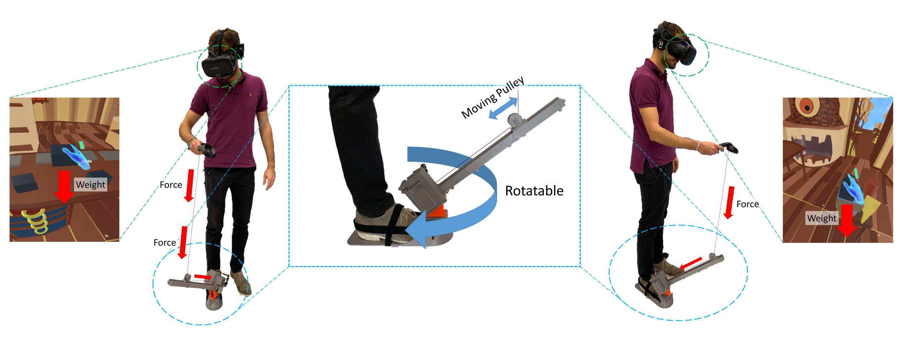

STROE: An Ungrounded String-Based Weight Simulation Device
(opens in new tab)

Venue. VR (2022)
Materials.
DOI(opens in new tab)
PDF(opens in new tab)
Abstract. We present STROE, a new ungrounded string-based weight simulation device. STROE is worn as an add-on to a shoe that in turn is connected to the user’s hand via a controllable string. A motor is pulling the string with a force according to the weight to be simulated. The design of STROE allows the users to move more freely than other state-of-the-art devices for weight simulation. It is also quieter than other devices, and is comparatively cheap. We conducted a user study that empirically shows that STROE is able to simulate the weight of various objects and, in doing so, increases users’ perceived realism and immersion of VR scenes.
Link to this page: